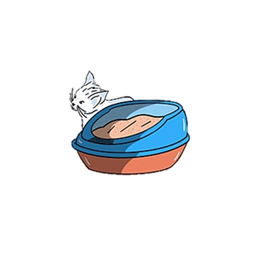
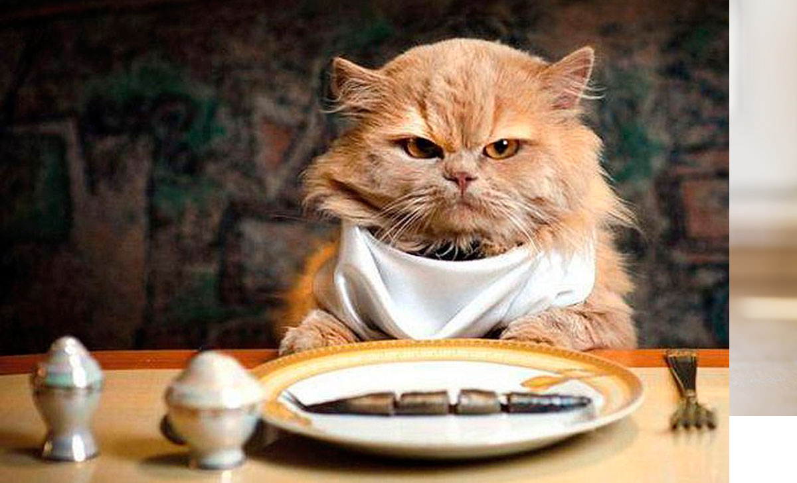

Overview:
Our purpose?
Provide quality pet food for everyone, commitment and quality guaranteed
Our audience?
Anyone with a cat who wants to provide the best quality food
Branding
Our website Logo:
So, wait are you waiting for?
We are starting but we would love to serve quality food to your pet, do not hesitate to contact us now for a free sample.
¡Call us now!
An advisor will contact you in a few moments to coordinate a free sample.